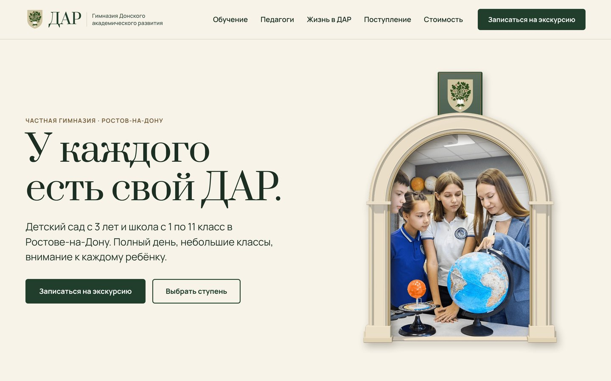

 Вариант A · светлый «У каждого есть свой ДАР» Светлая бумага, фотографии в арках и короткая заставка: двери гимназии открываются и ведут на сайт. СтоимостьПоступлениеКонтакты Открыть вариант A
Вариант B · зелёный «Здесь растёт ваш ДАР» Глубокий зелёный цвет герба, рельефный герб на первом экране и классические заголовки. СтоимостьПоступлениеКонтакты Открыть вариант B